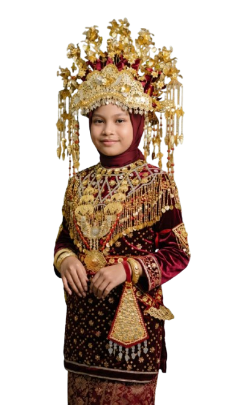

Selamat datang di portal cerdas SDN 1 Sukahaji. Pusat data, informasi spasial, dan kolaborasi antara Guru, Siswa, dan Orang Tua untuk mewujudkan pendidikan yang bermutu.

Integrasi pemantauan karakter, perlindungan warga sekolah, apresiasi karya, dan pembelajaran interaktif dalam satu pintu akses.
Pemantauan harian 7 Kebiasaan Anak Indonesia Hebat secara berjenjang antara Siswa, Wali Kelas, dan Orang Tua.
Saluran perlindungan siswa (TPPK), layanan konseling, kotak aspirasi, dan pelaporan keselamatan sarpras.
Etalase dokumentasi kegiatan sekolah, kreasi siswa, dan video praktik baik pembelajaran guru.
Lembar Kerja Peserta Didik (LKPD) interaktif 7 mata pelajaran, kolaborasi kelompok, dan evaluasi digital.
Visualisasi titik klaster tempat tinggal peserta didik SDN 1 Sukahaji secara agregat di wilayah Desa Sukahaji, Desa Cijulang, Desa Sukamulya, dan sekitarnya.